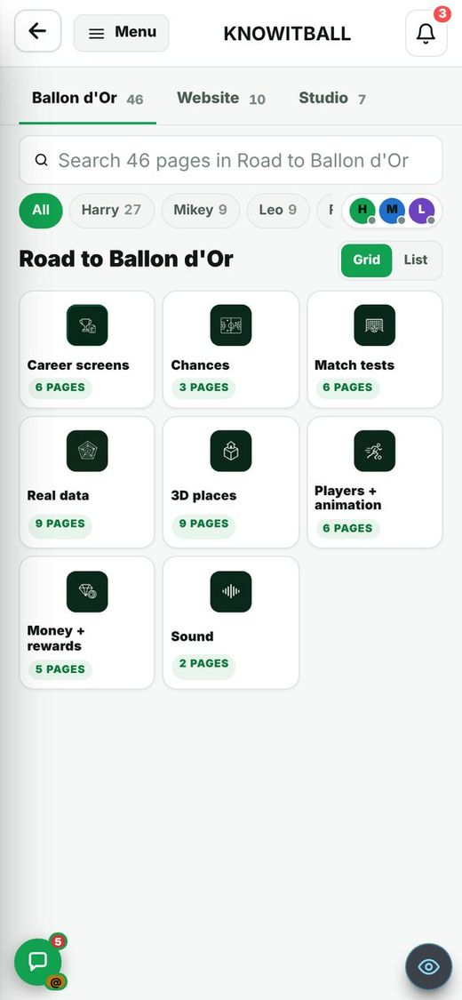
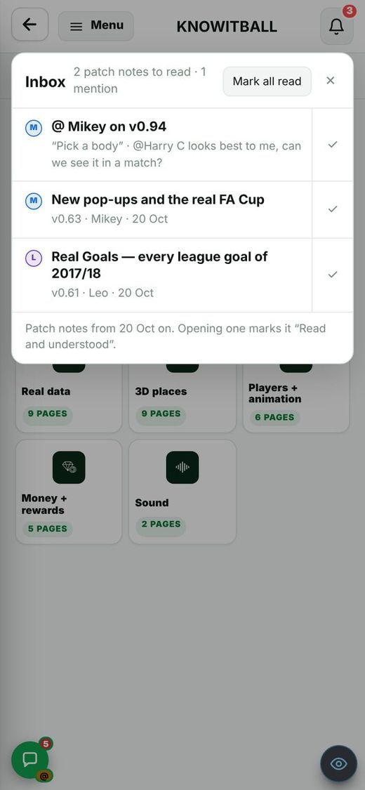
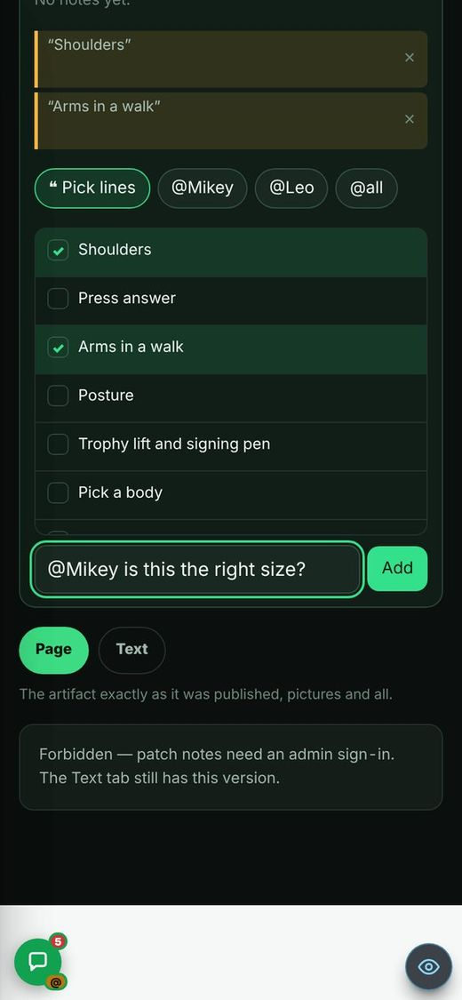
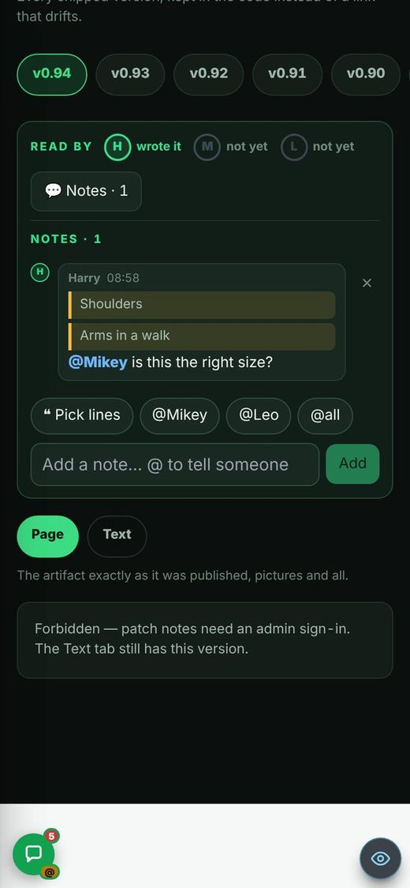
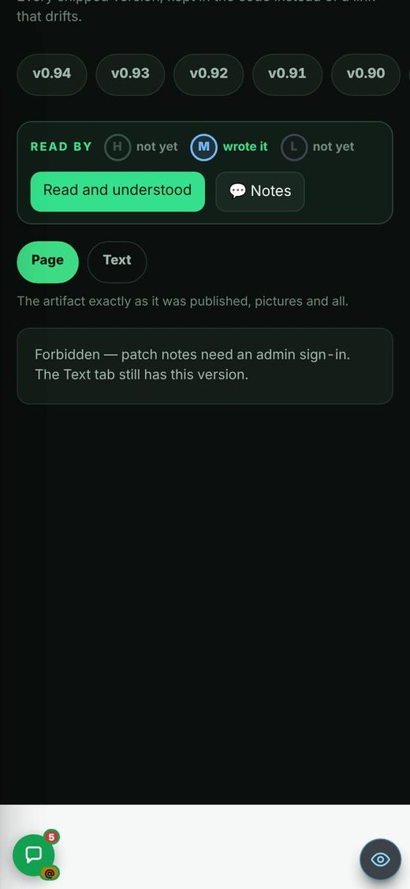
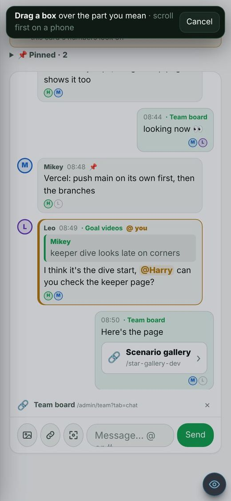
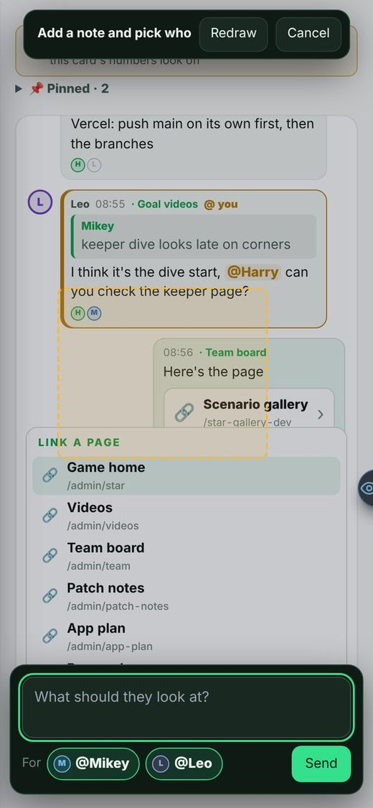
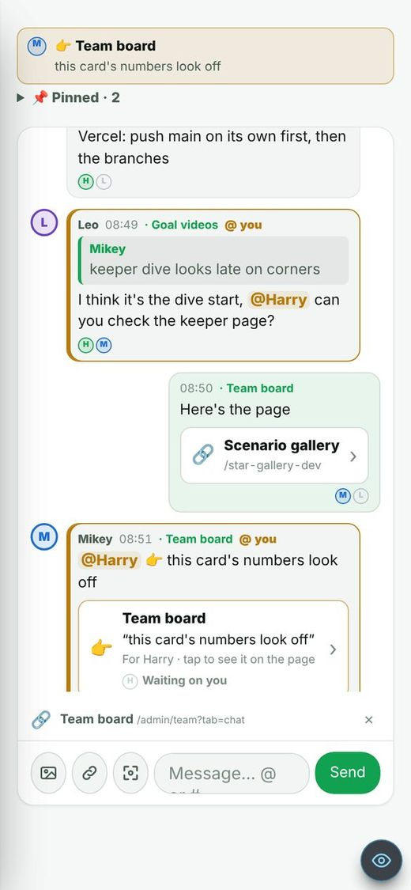
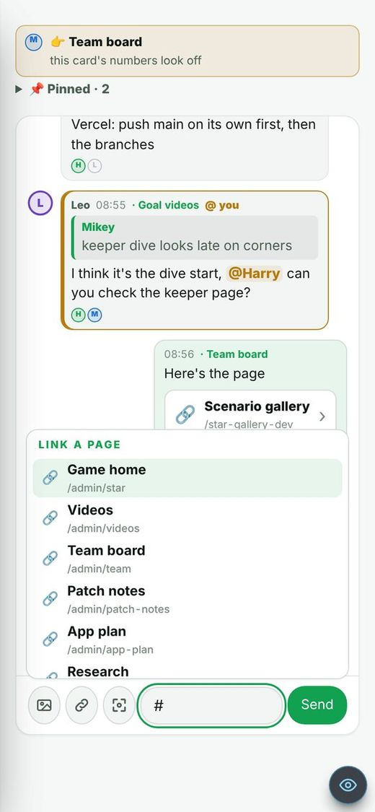

On the Harry branch, not live yet. The patch notes themselves go live on their own (see the last item).
21 Oct 2026 (Harry: “as soon as patch notes are built put them onto the site … notifications in an inbox for everyone”). In Admin → Patch notes this is v0.102h.
Patch notes were easy to miss: the only sign was a count on your card on the Team board.
A 🔔 at the top right of every admin page (the phone top bar, or the end of the game tabs on a computer). The red number counts the patch notes you haven't marked Read and understood, published on or after 20 Oct 2026; older ones never appear. Newest first. Tap one: it opens on the Patch notes tab and counts as read (the same receipt as the button). ✓ marks one read without opening; Mark all read clears it. Before team_room_v2.sql runs, the marks stay on that device and the list says so. Only Harry, Mikey and Leo see it.


Nobody knew a patch note had gone up unless they looked.
When a new patch note reaches the site, the first of the three to open an admin page makes the site buzz everyone but its author: one buzz per person (“New patch notes from Harry · v0.95h”, or “3 new patch notes to read”); tap it to open the newest. Only notes from the last 3 days, and each person once per version: the versions already rung are kept in each person's sign-in account, so no SQL. Uses the existing phone notifications (TEAM_PUSH_PRIVATE_KEY in Vercel). Tested with fakes; not seen on a real phone.
Harry: in a note you should be able to @ someone and pick lines of the patch note to talk about.
Under 💬 Notes: @Mikey / @Leo / @Harry / @all buttons (that person gets it in their Inbox and, with notifications on, a buzz), ❝ Pick lines (every headline of the version; tap the ones you mean) and ❝ Quote my selection (select words on the page first). A note shows its quoted lines first. Opening the notes marks a mention as seen.


On the patch notes, the 💬 Notes button (and Read and understood) could not be pressed.
The chat bubble's rule that lets taps pass through it was written for every Team room box, so it also hit the patch notes' Read bar.
The rule now covers only the bubble's own wrapper.

In point mode, dragging on a phone scrolled the page and no box appeared.
The same let-taps-through rule hit the drawing layer, so every touch went to the page under it. Not the frame setting (X-Frame-Options): the drawing layer is not in a frame, and the patch-notes pages load as text, not as a framed address.
Fixed with the same one-line change. Seen: the box draws and the note form opens.


On a phone you chat on the Team room page, so 🔗 “link this page” added a card for the chat (/admin/team?tab=chat).
“This page” is the chat when you are in the Team room.
In the Team room 🔗 now opens the list of pages (the same list as typing #); tap one to add it. On any other page it still links that page.


Patch notes only reached the site when Harry pushed the whole branch, so the team read them late.
Every build now ends with its patch notes, and they go to main at once in a patch-notes-only pull request made by scripts/patch-notes/ship.mjs. It starts from main and copies only the named versions' entries, their kept pages and pictures; it refuses if anything else changed or if the two patch-notes files import any code. The feature itself still waits for Harry's push. Brain notes RUL-TEAM-018 and PRO-TEAM-007.
The buzz for new patch notes and for an @ in a note were tested with fakes only.
They need a signed-in admin with notifications on. An @ in a note can't buzz anyone until team_room_v2.sql runs (notes stay on the device until then).
On a phone, when the chat sheet covers the bottom corners, the page's eye moves to the top right, over the bell.
Close the chat and it moves back. Not changed.